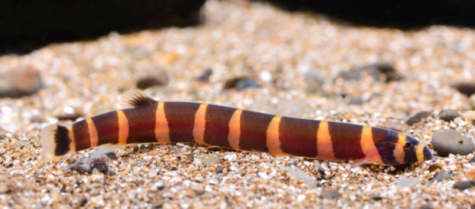
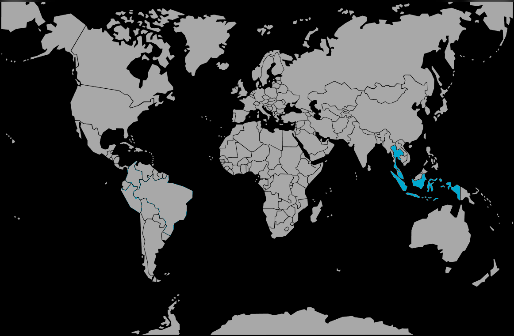

Systématique
- Ordre : Cypriniformes
- Famille : Cobitidae
- Genre : Pangio
- Espèce : P. kuhlii

Pangio kuhlii, communément appelé Loche coolie, est un petit poisson de fond serpentiforme originaire d'Asie du Sud-Est. Il appartient à la famille des Cobitidae (loches).
Il mesure adulte entre 8 et 10 cm, parfois jusqu'à 12 cm. Son corps est allongé et cylindrique, ressemblant à une petite anguille, avec une alternance de bandes verticales brun foncé à noires sur un fond jaune orangé ou saumoné. La bouche est entourée de barbillons sensibles.
Il existe plusieurs espèces très similaires souvent vendues sous le nom de P. kuhlii (comme P. semicincta ou P. myersi), mais leurs besoins sont identiques. Une particularité anatomique est la présence d'une épine érectile sous l'œil, utilisée pour la défense.
C'est un poisson benthique (de fond) et principalement nocturne ou crépusculaire. C'est une espèce sociale et grégaire qui doit impérativement être maintenue en groupe d'au moins 6 individus. Seul, il reste caché en permanence et dépérit.
Il aime se faufiler dans les interstices, sous les racines et surtout s'enfouir dans le substrat. Un sol non coupant est donc obligatoire. Bien qu'il passe beaucoup de temps caché le jour, un groupe rassuré sortira lors des distributions de nourriture, créant un enchevêtrement de corps assez spectaculaire. Il est totalement pacifique.
Mode : ovipare.
La reproduction est considérée comme très difficile, voire accidentelle en aquarium communautaire.
Les œufs, de couleur verte, sont adhésifs et se fixent aux racines des plantes flottantes ou au décor. Pour réussir l'élevage, on utilise souvent des injections hormonales chez les professionnels. Cependant, des pontes spontanées surviennent parfois lors de changements de pression atmosphérique combinés à de gros changements d'eau.
Dimorphisme sexuel : Difficile à observer hors période de frai. Les femelles matures, chargées d'œufs, présentent un embonpoint très net au niveau de l'abdomen, laissant parfois entrevoir les œufs verts par transparence à travers la paroi abdominale. Les mâles peuvent avoir des nageoires pectorales légèrement plus grandes et épaissies (difficile à voir à l'œil nu).
Espérance de vie : Longue pour un si petit poisson, souvent 10 ans et plus.
Il est originaire d'Indonésie (Java, Sumatra, Bornéo) et de la péninsule malaise. Il vit dans les ruisseaux forestiers à courant lent et les zones marécageuses, où le fond est recouvert d'une épaisse couche de vase et de feuilles mortes (litière) dans laquelle il s'enfouit. L'eau y est souvent ambrée et acide.
Répartition

Origine naturelle :
- Asie du Sud-Est.
- Indonésie (Java, Sumatra, Bornéo).
- Malaisie.
- Thaïlande (Sud).
Paramètres de maintenance
Température : 24 à 30 °C (aime la chaleur).
pH : 5,5 à 7,0 (préfère l'eau acide).
GH : 1 à 10 °dGH.
Substrat : Sable fin (type sable de Loire) OBLIGATOIRE. Le gravier coupant ou le quartz concassé blessent ses barbillons et empêchent son comportement fouisseur, entraînant des infections mortelles.
Volume conseillé : Minimum 60 à 80 L pour un groupe.
Régime alimentaire
Régime : omnivore / détritivore.
Dans la nature, il tamise le sable pour trouver des larves d'insectes, des petits crustacés et des débris végétaux.
En aquarium, il mange tout ce qui tombe au fond. Il raffole des vers de vase (vivants ou congelés) qui l'incitent à sortir. Les pastilles de fond pour poissons fouisseurs sont une bonne base.